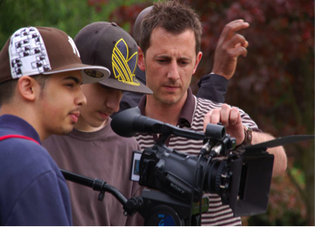
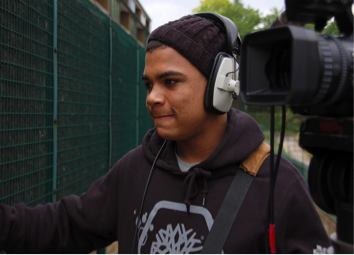

DEVELOPING TALENT
In 1999 we received funding from the Arts Council’s Lottery scheme, Arts for Everyone, for a three-year programme of annual, training-based productions with young people and adults from local migrant and refugee communities and trainees from our City & Guilds courses or with equivalent experience. This funding allowed us to develop training at a higher level.
Young people, and The Video College itself, greatly benefited from the First Light scheme, funded by the now defunct Film Council’s Lottery programme. First Light recognised the educational value of hands-on training for young people from all over the UK and funded programmes through which young people were supported by experienced industry tutors in making high-quality films.
The industry focus of the Film Council, its understanding of the production process, and the demand from First Light itself that young people’s productions should meet industry standards, meant that budgets for First Light films were realistic. We were able to contract industry professionals as tutors throughout the programme and fund adequate time for story and script development, creative craft and production management training, and production costs. In essence we were able to replicate the process of a professional production. The benefits to young people were considerable. They gained higher-level skills and a deeper knowledge of what is involved in making a film, which they applied to their subsequent productions. Many of those who took part in First Light films were successful in securing places on university film and media courses.
The Video College also gained from the three programmes we ran from 2002 to 2009 and the nine films that were produced. We drew on what we had learnt in the way we structured our core youth programme and our partnership productions with young people. As First Light was the only funder that specifically supported young people’s filmmaking and at a level that allowed for in-depth training and experimentation, its contributions were vital to the development of our work with young people.
| Round and Round | |
|  |  |
TRUE ID from The Video College on Vimeo.
Round and Round from The Video College on Vimeo.
Life Goes On from The Video College on Vimeo.
The Video College was one of three organisations in England and Scotland selected to pilot Second Light, a First Light initiative supported by UK Film Council and Creative Skillset, Sector Skills Council for the Audio-Visual Industries. TRAINING FOR 18-23 YEAR OLDS